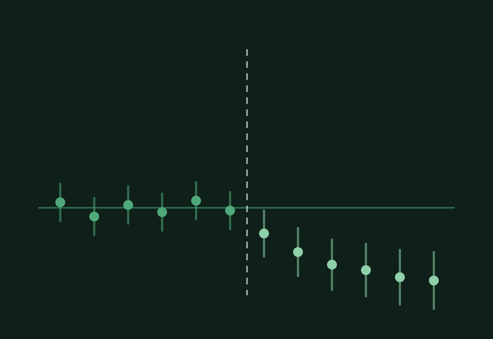
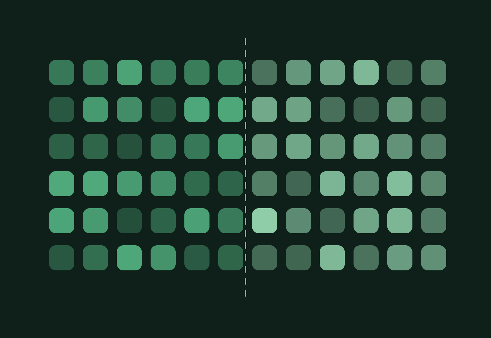

I build systems that answer causal questions, and systems that act on the answers. Currently a data scientist at Nordstrom, working on experimentation and forecasting. Previously hospital research at Seattle Children's.


McDaniel CE, Seryozhenkov E, Dever R, Ralston Daniel M, et al. Characteristics of US Rural Hospitals by General Pediatric Care Availability, 2023. Academic Pediatrics, 2026.
McDaniel CE, Ralston Daniel M, Freyleue SD, Seryozhenkov E, et al. Identifying Inpatient Pediatric Services Across National Datasets. JAMA Network Open, 2025;8(6):e2513527.